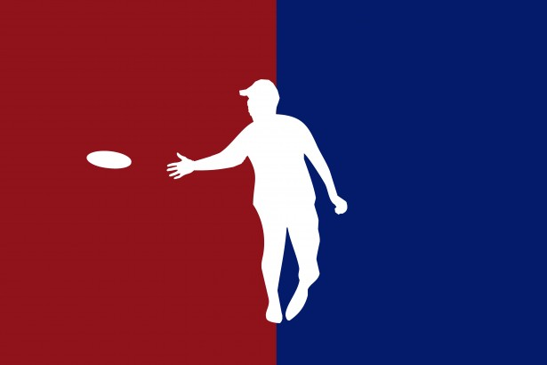
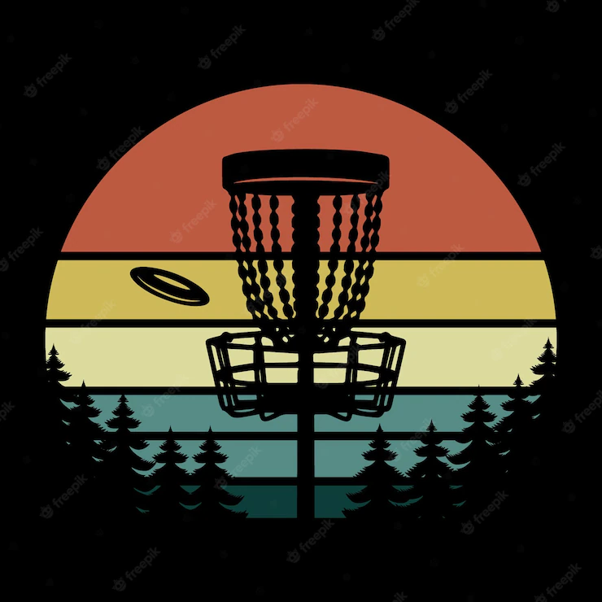

Home
Looking to find quality information/training/gear and hookups for all of your disc golfing needs? You have come to the right place!
The worst feeling in the world is when you are trying to find some quality content but even extensive web searches cause you to turn up empty-handed.
Our website has resources you won't be disappointed in such as videos and tutorials from professionals that can help disc golfers from any skill level from beginners looking to try something new to Pros and everything in between.
We also provide all kinds of disc golfing merchandise to get you started or to even add to your already existing collection. We also know how frustrating it can be to not even know where to go to find accurate up to date locations and courses to play on and even live events going on.
Disc golfing is a really fun sport, trust us we know! We want to take the pressures of finding the resources you need off of your shoulders by providing you with all of this great content.
It is a growing sport though and so finding what you need can be a hassle and a half. Here at Disc Like a Pro, we are here to serve everyone and want to be able to allow for even the most beginners to become what they want to be.
 